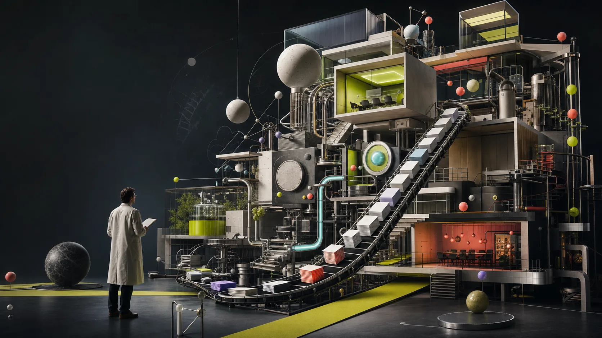

The machine is impressive.
Big companies are full of smart people, good intentions, polished decks, and mysterious pipes. Somewhere inside, value is supposed to come out.

Emzar's unofficial profile, built by the machine
Usually by finding the one awkward question everyone is politely avoiding, then adding just enough impatience to stop admiring the problem.
Tiny lab note:
I mostly poke the fog until it admits which decision it is hiding.Chapter 01
A quick tour of the place where strategy decks, good intentions, and mysterious pipes meet.
Big companies are full of smart people, good intentions, polished decks, and mysterious pipes. Somewhere inside, value is supposed to come out.
“Transformation.” “Growth.” “Priority.” “AI.” Everyone nods. Everyone means something different. This is where many strategies go to become expensive weather.
The machine often wants the answer before agreeing on the question. So the useful trick is less heroic: find the question, name the owner, remove one shiny distraction, and see what still moves.
I like it. I use it. I study it. I also know the demo is not the deployment. The interesting work starts when the magic has to find the right spreadsheet, explain itself twice, and still be useful on Monday.
A tiny diagnostic
Pick the one that sounds familiar. This is not scientific. It is often accurate anyway.
Credible without becoming boring
Trying to keep change from becoming a slide deck with a travel budget. Fewer ceremonies, more things that actually move.
Choosing where growth deserves resources, and where busyness is pretending to be strategy.
Helped a new company move out of its parent’s house: keys, cables, contracts, people, passwords, and reality.
Started close to the pipes. SAP screens, infrastructure, vaccines, deals, integrations. Useful scar tissue for anyone tempted to say “just execute.”
The human bit
Quantic EMBA, honorsBecause confidence should occasionally meet finance.
AI engineering, in progressBecause AI is too important to leave at the keynote level.
Applied mathematics and cyberneticsThe original factory settings.
Personal fitness trainer programmeCompleted. Financial return so far: exactly $0. Curiosity return: annoyingly high.
Personal experiments3D Tetris, ecommerce builds, AI-assisted coding, and other useful ways to feel slightly underqualified.
End of lab tour
For the polite chronology, open the official profile. For a better conversation, start with the weird problem you are trying to make less weird.